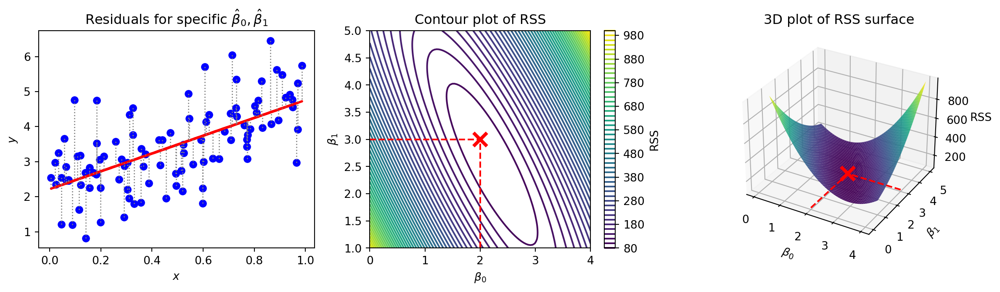
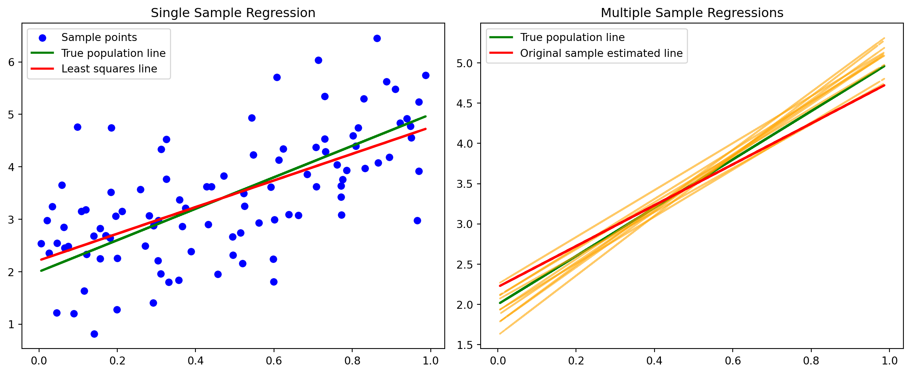
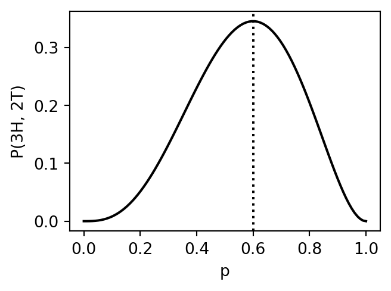
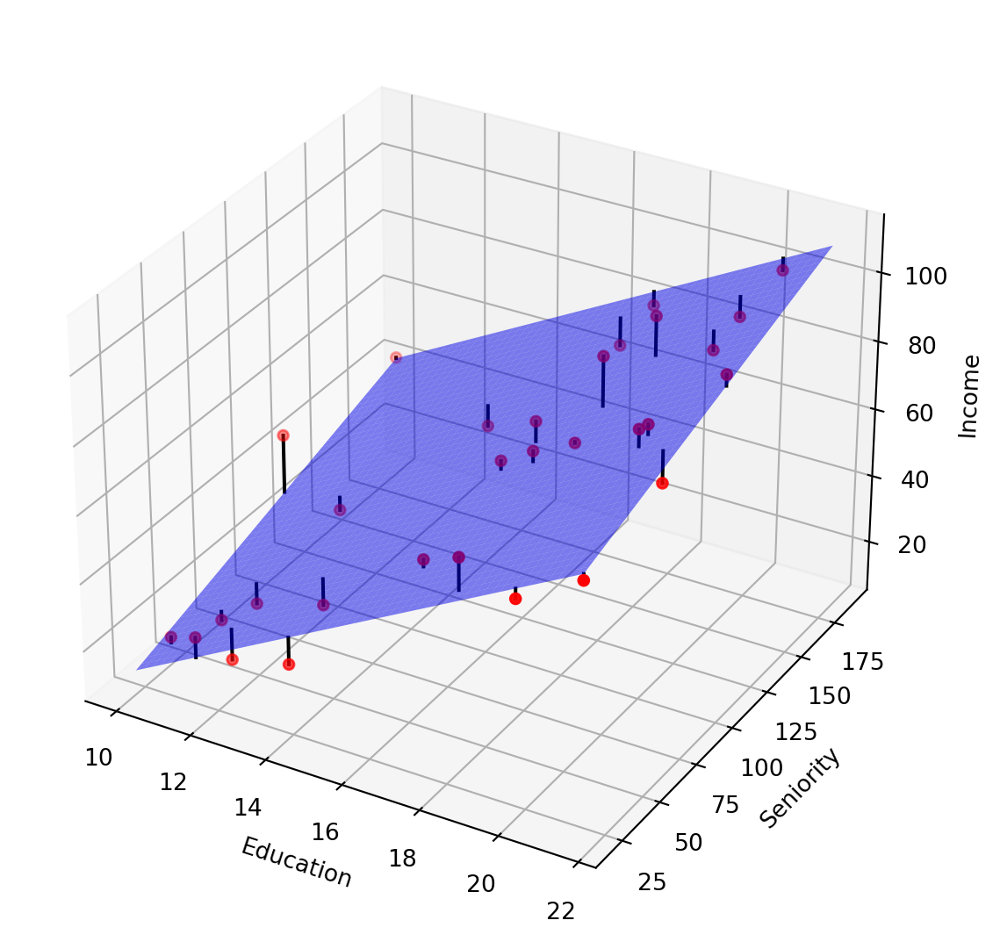
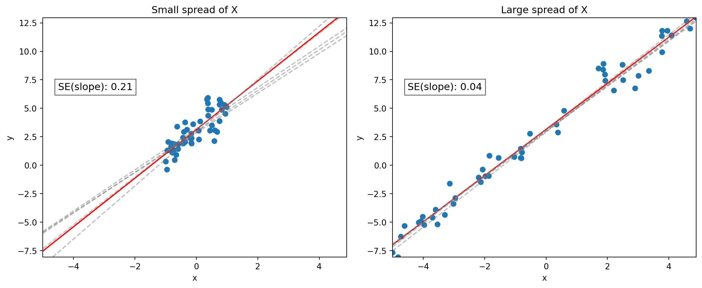
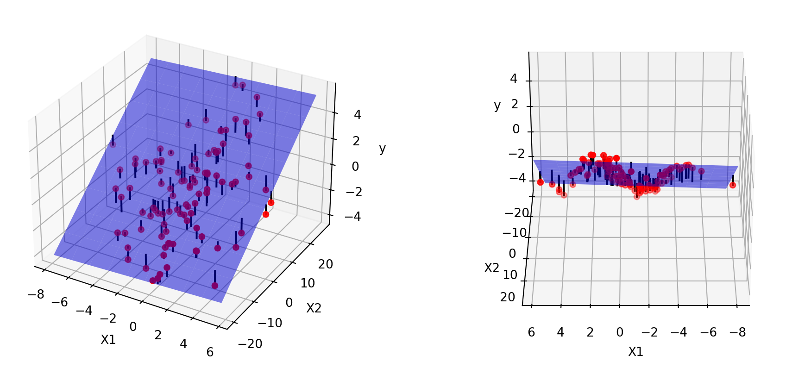
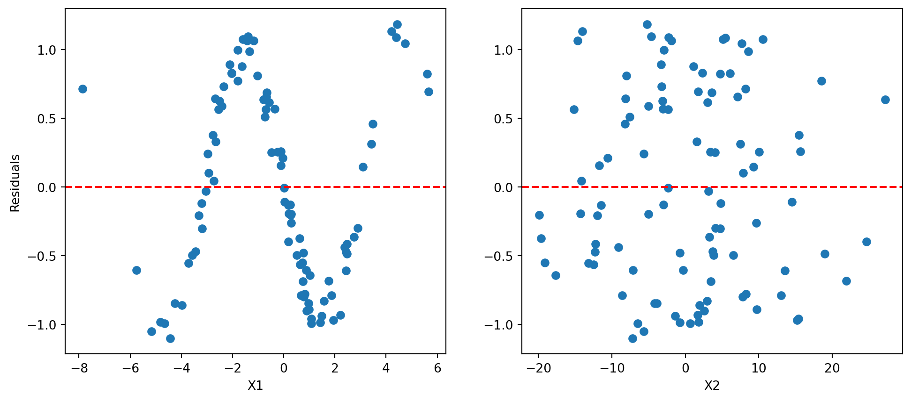
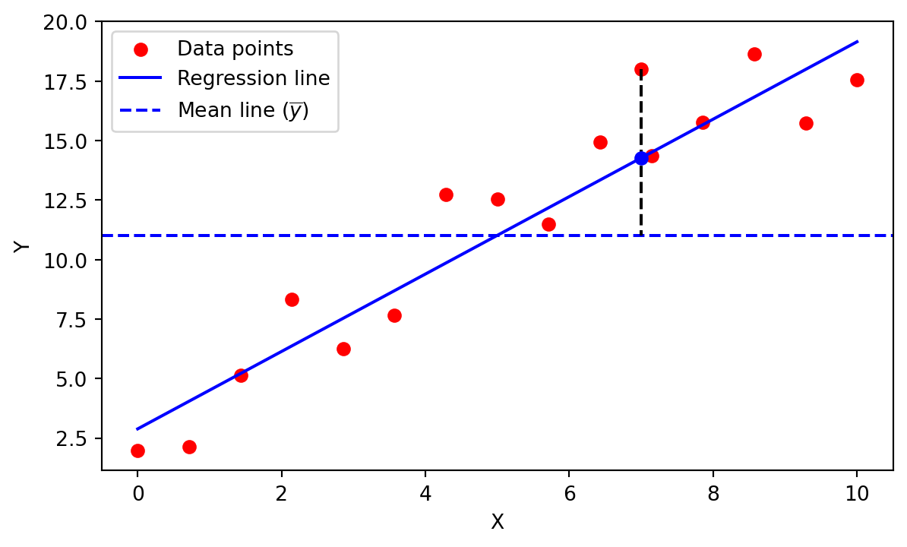

Introduction to Statistical Learning
Linear Models - Part A - Class 3
Giora Simchoni
gsimchoni@gmail.com and add #intro2sl in subject
Stat. and OR Department, TAU
Simple linear regression
Why learn linear regression?
- Linear regression is still a highly useful modeling tool
- Super-fast to train and predict, super-simple to implement
- It can be used in many non-linear cases by using transformed variables / transformed goals
- Its probabilistic aspect is fully understood, so inference questions can be answered exactly (under the regression assumptions)
- Many newer methods can be seen as a generalization for linear regression
Simple linear regression
- Assume: \(y \approx \beta_0 + \beta_1x\)
- This is the unobserved population regression line
- We look for the values of \(\beta_0, \beta_1\) through a sample \(\{(x_1, y_1), \dots, (x_n, y_n)\}\)
- In order to estimate the parameters we need to define a measure of error
- By far the most common measure is:
\(RSS = \sum_{i = 1}^n (y_i - \hat{\beta}_0 - \hat{\beta}_1x_i)^2\) or its scaled version: \(MSE = \frac{RSS}{n}\)
From line to RSS surface
\[RSS = \sum_{i = 1}^n (y_i - \hat{\beta}_0 - \hat{\beta}_1x_i)^2\]
Simple linear regression
- A simple derivation gives:
\(\hat{\beta}_1 = \frac{\sum_i (x_i - \bar{x})(y_i - \bar{y})}{\sum_i (x_i - \bar{x})^2} = \frac{\widehat{Cov(X,Y)}}{\widehat{Var(X)}},\;\;\;\;\hat{\beta}_0 = \bar{y} - \hat{\beta}_1 \bar{x}\)
- This is the least squares line (OLS), the best linear predictor for the population regression line
- Replacing the sample averages by the population means (or having a huge sample) should get us to the true line
- Using \(\hat{\beta}_0, \hat{\beta}_1\) we can easily perform prediction
Average of many OLS lines

Detour: Maximum likelihood estimation (MLE)
Example: Coin Toss
- Suppose I get a coin, its result is \(X_i\), where \(P(X_i = H) = p\)
- How can I estimate \(p\)?
- I toss the coin \(n = 5\) times: \(\{H, H, T, T, H\}\)
- What is the probability of getting \(3H\) and \(2T\)?
- For \(p = 0.2 \rightarrow P(3H, 2T) = {5\choose3} \cdot 0.2^3 \cdot 0.8^2 \approx 0.05\)
- For \(p = 0.3 \rightarrow P(3H, 2T) = {5\choose3} \cdot 0.3^3 \cdot 0.7^2 \approx 0.13\)
- So simple, let’s calculate for any \(p\) and choose \(\hat{p} = \arg\max_p P(3H, 2T)\)

Maximum likelihood estimation (MLE) (I)
- First Generalization:
- \(X_i \sim Bernoulli(p)\), \(n\) tosses, got \(k\) Heads
- \(\text{Likelihood}(p) = L(p|x_1, \dots, x_n) = P(x_1, \dots, x_n) = {n \choose k}p^{k}(1-p)^{n -k}\)
- Goal: \(\hat{p} = \arg\max_p{L(p|x_1, \dots, x_n)}\)
- Not surprising: \(\hat{p} = \frac{k}{n}\)
- Notice with: \(\text{Log-Likelihood}(p) = \ell(p|x_1, \dots, x_n) = \log P(x_1, \dots, x_n) = k\log p + (n -k)\log(1-p)\)
- we get the same \(\hat{p} = \frac{k}{p}\)
Maximum likelihood estimation (MLE) (II)
- Second generalization, when \(X_1, \dots, X_n \sim P_\theta\) i.i.d
- \(\text{Likelihood}(\theta) = L(\theta|x) = P_\theta(x_1, \dots, x_n) = \prod_{i = 1}^n P_\theta(X_i = x_i)\)
- Goal: \(\hat{\theta} = \arg\max_\theta{L(\theta|x)}\)
- \(\hat{\theta}\) is the MLE, not always a closed solution
- Usually easier: \(\text{Log-Likelihood}(\theta) = \ell(\theta|x) = \log P_\theta(x_1, \dots, x_n) = \sum_{i = 1}^n \log P_\theta(X_i = x_i)\)
- For a continuous \(X \sim f_\theta(x)\):
- \(L(\theta|x) = \prod_{i = 1}^n f_\theta(x_i)\)
- \(\ell(\theta|x) = \sum_{i = 1}^n \log f_\theta(x_i)\)
Probabilistic view of linear regression
Probabilistic justification for OLS
- Assume the data’s true model is:
- \(y_i = \beta_0 + \beta_1x_i + \varepsilon_i\)
- \(\varepsilon_i\) are i.i.d, specifically: \(\varepsilon_i \sim \mathcal{N}(0, \sigma^2)\)
- \((x_i, \varepsilon_i)\) are independent
- Now we can write the log likelihood and maximize it
Simple linear regression maximum likelihood
Since the errors are normal and the model is linear we get:
\(y_i = \beta_0 + \beta_1x_i + \varepsilon_i \Rightarrow y_i \sim \mathcal{N}(\beta_0 + \beta_1x_i, \sigma^2) \Rightarrow\)
\[L(\beta, \sigma^2 | x, y) = \prod_{i = 1}^n f(y_i) = \prod_{i = 1}^n \frac{1}{\sqrt{2\pi\sigma^2}}\exp\left[-\frac{(y_i - \beta_0 - \beta_1x_i)^2}{2\sigma^2}\right]\] \[= (2\pi\sigma^2)^{-\frac{n}{2}}\exp\left[-\frac{1}{2\sigma^2}\sum_{i = 1}^n(y_i - \beta_0 - \beta_1x_i)^2\right]\]
Calculating the log-likelihood we get:
\(\ell(\beta, \sigma^2 | x, y) = -\frac{n}{2}\ln(2\pi)-\frac{n}{2}\ln(\sigma^2)-\frac{1}{2\sigma^2}\)\(\sum_{i = 1}^n(y_i - \beta_0 - \beta_1x_i)^2\)
Multiple linear regression
From simple to multiple regression
\(y_i = \beta_0 + \beta_1x_{i1} + \dots + \beta_px_{ip} + \varepsilon_i \Rightarrow y_i = x_i^T\beta + \varepsilon_i\), \(\varepsilon_i \sim \mathcal{N}(0, \sigma^2)\)
Or even more concisely:
\(y = \begin{pmatrix}y_{1} \\ \vdots \\ y_{n}\end{pmatrix}\), \(X = \begin{pmatrix} 1 & x_{11} & x_{12} & \cdots & x_{1p} \\ 1 & x_{21} & x_{22} & \cdots & x_{2p} \\ 1 & x_{31} & x_{32} & \cdots & x_{3p} \\ \vdots & \vdots & \vdots & \ddots & \vdots \\ 1 & x_{n1} & x_{n2} & \cdots & x_{np} \end{pmatrix}\), \(\beta = \begin{pmatrix}\beta_0 \\ \beta_{1} \\ \vdots \\ \beta_{p}\end{pmatrix}\), \(\varepsilon = \begin{pmatrix}\varepsilon_{1} \\ \vdots \\ \varepsilon_{n}\end{pmatrix}\)
\[\Rightarrow y = X\beta + \varepsilon, \quad \varepsilon \sim \mathcal{N}(\textbf{0}, \sigma^2\mathbf{I}_n)\]
From line to (hyper)plane

Multiple linear regression ML
\(y_i = x_i^T\beta + \varepsilon_i \Rightarrow y \sim \mathcal{N}(x_i^T\beta, \sigma^2) \Rightarrow\)
\[L(\beta, \sigma^2 | X, y) = \prod_{i = 1}^n f(y_i) = \prod_{i = 1}^n \frac{1}{\sqrt{2\pi\sigma^2}}\exp\left[-\frac{(y_i - x_i^T\beta)^2}{2\sigma^2}\right]\]
\[= (2\pi\sigma^2)^{-\frac{n}{2}}\exp\left[-\frac{1}{2\sigma^2}\sum_{i = 1}^n (y_i - x_i^T\beta)^2\right]\]
\[= (2\pi\sigma^2)^{-\frac{n}{2}}\exp\left[-\frac{1}{2\sigma^2}(y - X\beta)^T(y - X\beta)\right]\]
Calculating the log-likelihood we get:
\(\ell(\beta, \sigma^2 | X, y) = -\frac{n}{2}\ln(2\pi)-\frac{n}{2}\ln(\sigma^2)-\frac{1}{2\sigma^2}\)\((y - X\beta)^T(y - X\beta)\)
Linear regression MLE
\(\ell(\beta, \sigma^2 | X, y) = -\frac{n}{2}\ln(2\pi)-\frac{n}{2}\ln(\sigma^2)-\frac{1}{2\sigma^2}(y - X\beta)^T(y - X\beta)\)
\(= \mathcal{C} - \frac{n}{2}\ln(\sigma^2) - \frac{1}{2\sigma^2}(y^Ty -2\beta^TX^Ty + \beta^TX^TX\beta)\)
\(\frac{\partial l}{\partial \beta} = -\frac{1}{2\sigma^2}(2X^Ty - 2X^TX\beta)\)
\(\frac{1}{\sigma^2}(X^Ty - X^TX\beta) = 0\)
\(X^TX\beta = X^Ty\)
\(\hat{\beta} = (X^TX)^{-1}X^Ty\)
Similarly:
\(\frac{\partial l}{\partial \sigma^2} = -\frac{n}{2\sigma^2} + \frac{1}{2\sigma^4}(y - X\beta)^T(y - X\beta)\) \(\Rightarrow\) \(\hat{\sigma}^2 = \frac{1}{n}(y - X\beta)^T(y - X\beta) = \frac{RSS}{n}\)
Distribution of OLS estimators
Distribution of the OLS solution
What we know: \[(a)\; E(y) = X\beta,\;\;\;\; (b)\; Cov(y) = \sigma^2 I_n ,\;\;\;\;(c)\; \hat{\beta} = (X^TX)^{-1} X^T y\]
Mean: \[E(\hat{\beta}) \stackrel{(c)}{=} (X^TX)^{-1} X^T E(y) \stackrel{(a)}{=} (X^TX)^{-1} X^TX\beta = \beta.\]
Covariance matrix: \[Cov(\hat{\beta}) \stackrel{(c)}{=} (X^TX)^{-1} X^T Cov(y) X (X^TX)^{-1} \stackrel{(b)}{=} \sigma^2 (X^TX)^{-1} (X^T X) (X^TX)^{-1} = \sigma^2 (X^TX)^{-1}.\]
Variance of OLS estimators
Again: \(Cov(\hat{\beta}) = \sigma^2(X^TX)^{-1}\)
For simple regression and scalar \(\hat{\beta}_0, \hat{\beta}_1\), this amounts to the (squared) Standard Errors: \[SE(\beta_0)^2 = \sigma^2\left[\frac{1}{n} + \frac{\bar{x}^2}{\sum_{i = 1}^n(x_i - \bar{x})^2}\right]; \quad SE(\beta_1)^2 = \frac{\sigma^2}{\sum_{i = 1}^n(x_i - \bar{x})^2}\]
where, \(\sigma^2\) would be replaced by its MLE or unbiased estimator the (squared) Residual Standard Error (RSE): \(RSE^2 = \frac{RSS}{n - p - 1}\)
Question: what happens to the SE when \(x\) is more “spread out”?
SE vs. \(x\) spread

Closely related to a \(x\) points’ leverage.
Gauss-Markov Theorem
Under the assumptions of the previous slides: the linear regression \(\hat{\beta}\) is the best linear unbiased estimator (BLUE), i.e.: the unbiased linear estimator with the smallest variance.
In other words, for any linear unbiased \(\tilde{\beta} = Cy\): \[Var(\tilde{\beta}) \succeq Var(\hat{\beta})\]
Hypothesis testing
Hypothesis testing: simple
\[H0\text{: feature }x\text{ does not affect } y\] \[H1\text{: feature }x\text{ does affect } y\]
Translates to: \[H0: \beta_1 = 0\] \[H1: \beta_1 \neq 0\]
\(t_{obs} = \frac{\hat{\beta}_1 - 0}{\hat{SE}(\hat{\beta}_1)} \sim T_{n - 2}\)
\(\Rightarrow \text{P-value} = P(T_{n - 2} > |t_{obs}|)\)
\(\Rightarrow CI_{0.95}(\beta_1) = \hat{\beta}_1 \pm T_{n - 2, 0.975} \cdot \hat{SE}(\hat{\beta}_1) \approx \hat{\beta}_1 \pm 2 \cdot \hat{SE}(\hat{\beta}_1)\)
Hypothesis testing: multiple
\[H0\text{: features }X\text{ do not affect } y\] \[H1\text{: features }X\text{ do affect } y\]
Translates to: \[H0: \beta_1 = \dots = \beta_p = 0\] \[H1: \beta_j \neq 0 \text{ for at least one }j\]
\(f_{obs} = \frac{(TSS - RSS)/p}{RSS / (n - p - 1)} \sim F_{p, n - p - 1}\)
\(\Rightarrow \text{P-value} = P(F_{p, n - p - 1} > f_{obs})\)
Example with statsmodels
OLS Regression Results
==============================================================================
Dep. Variable: Income R-squared: 0.934
Model: OLS Adj. R-squared: 0.929
Method: Least Squares F-statistic: 191.4
Date: Mon, 28 Oct 2024 Prob (F-statistic): 1.13e-16
Time: 18:58:28 Log-Likelihood: -100.15
No. Observations: 30 AIC: 206.3
Df Residuals: 27 BIC: 210.5
Df Model: 2
Covariance Type: nonrobust
==============================================================================
coef std err t P>|t| [0.025 0.975]
------------------------------------------------------------------------------
const -50.0856 5.999 -8.349 0.000 -62.394 -37.777
Education 5.8956 0.357 16.513 0.000 5.163 6.628
Seniority 0.1729 0.024 7.079 0.000 0.123 0.223
==============================================================================
Omnibus: 3.352 Durbin-Watson: 2.102
Prob(Omnibus): 0.187 Jarque-Bera (JB): 2.672
Skew: 0.729 Prob(JB): 0.263
Kurtosis: 2.892 Cond. No. 502.
==============================================================================
Notes:
[1] Standard Errors assume that the covariance matrix of the errors is correctly specified.Choosing between nested models
Checking whether a subset of \(q\) features given the other \(p - q\) features affect \(y\): \[H0: \beta_{p - q + 1} = \dots = \beta_p = 0\] \[H1: \beta_j \neq 0 \text{ for at least one } j \text{ out of } q \text{ features}\]
Run an additional regression without these \(q\) features, reach \(RSS_0\), then:
\(f_{obs} = \frac{(RSS_0 - RSS)/q}{RSS / (n - p - 1)} \sim F_{q, n - p - 1}\)
- When \(q = 1\), \(f_{obs} = t^2_{obs}\), where \(t_{obs} \sim T_{n - p - 1}\) (testing a single feature given others)
Question: why \(F\)-test? Why not test for each of the \(p\) features with this \(t_{obs}\) test?
Goodness of Fit and Feature Selection
Model Fit: plotting
When \(p\) is low - draw!

Model fit: residuals plots

Model Fit: \(R\) squared
Measure of “explained variance”:
\(R^2 = 1 - \frac{\sum_{i = 1}^n (y_i - x_i^T\hat{\beta})^2}{\sum_{i = 1}^n (y_i - \bar{y})^2} = 1 - \frac{RSS}{TSS} = 1 - \frac{(y - X\hat{\beta})^T(y - X\hat{\beta})}{(y - X\hat{\beta^*_0})^T(y - X\hat{\beta^*_0})}\)

Careful: \(R^2\) is monotone increasing in \(p\) for the training data!
Intro. to feature selection
How can we choose a subset of the variables?
We will devote an entire class for that.